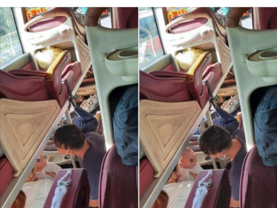
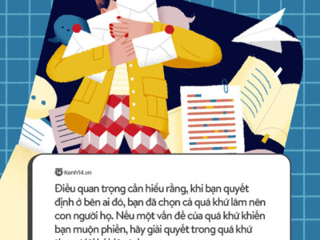
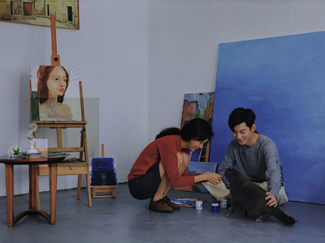

Sống độc thân đến già, kết hôn muộn, hôn nhân không sinh con,... là những cách sống mà giới trẻ Hàn Quốc đang hướng đến: Nguyên nhân là vì sao?
Rốt cuộc vì sao đàn ông cần cưới vợ?
"Mượn đồ ăn" nói chuyện tình yêu, Trấn Thành cho ra 1 loạt châm ngôn khiến ai cũng gật gù

Người đàn ông cùng một hành động nhỏ thu hút đến 60 nghìn lượt like: Nếu có lấy chồng hãy cố tìm người như thế!
Không phải không muốn yêu đương, mà là không dám: Thanh xuân ai cũng đã trải qua cảm giác chông chênh này

Đổ lỗi cho người yêu vì cảm xúc cá nhân, không thẳng thắn đối diện với vấn đề: Đây chỉ là 2 trong số 6 thói quen độc hại trong tình yêu chúng ta vẫn mặc nhiên chấp nhận
Hội gái xinh "sáng mắt ra" sau khi bị phụ tình: Người đã không xứng thì khỏi mất công hành xử kém văn minh

Nếu chưa làm được những điều này, vậy đừng vội vàng kết hôn
Trai đẹp 6 múi khoe cơm nhà ngon như ngoài hàng: "Nấu ăn cũng như tán gái vậy, không chỉ yêu mà cần hiểu"